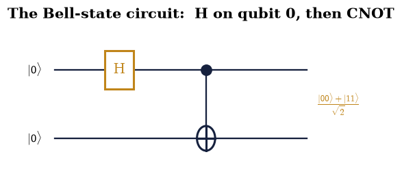
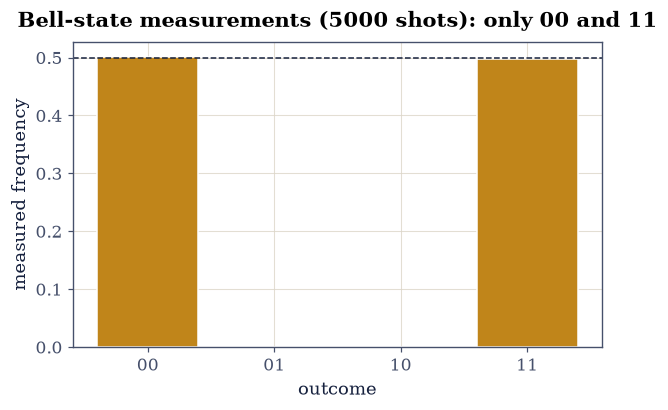
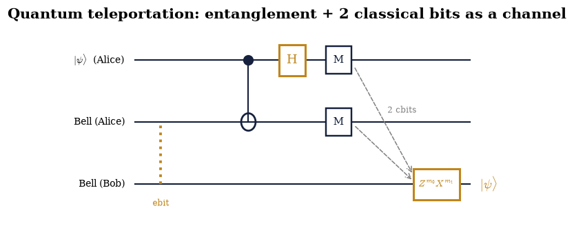
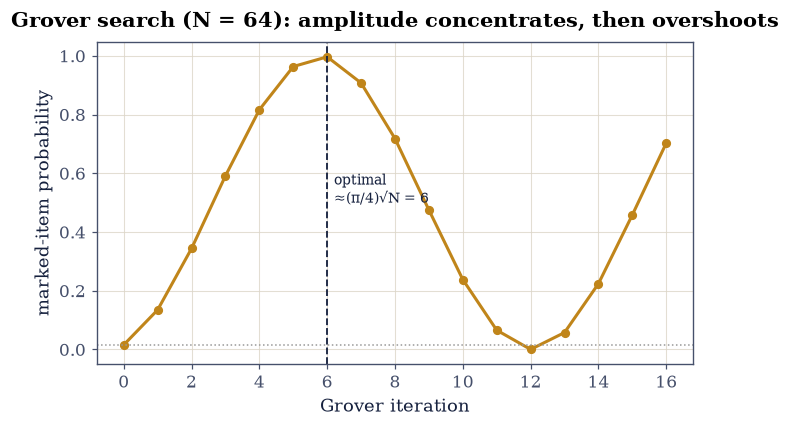

6.27 Quantum Information: Gates, Circuits, Teleportation, and Algorithms#
Notebook overview#
This is the capstone of Volume VI, and its argument is a single realization: a quantum computer is nothing more than the linear algebra this volume has been doing all along. A qubit is the two-state system of Movement I (§6.4, §6.8); a quantum gate is a unitary matrix (the evolution of §6.7); a quantum circuit is a product of gates acting on a tensor-product state (§6.14, §6.8); a measurement is the Born rule (§6.5). Nothing new is required — only these pieces, arranged deliberately.
From them, and from entanglement as a resource (§6.25, §6.26), come feats with no classical analogue. Quantum teleportation transfers an unknown qubit across space using only a shared Bell pair and two classical bits — reproducing the input exactly, for every measurement outcome, without ever cloning it (the no-cloning theorem, itself a one-line consequence of linearity). Quantum algorithms turn superposition and interference into speed: Deutsch–Jozsa decides a global property of a function in a single query where classical computation may need exponentially many; Grover’s search finds a marked item among \(N\) in about \(\tfrac\pi4\sqrt N\) steps by amplitude amplification — a rotation in a 2-D subspace, the same geometry we have used throughout. Shor’s algorithm (named, not built) would factor large integers efficiently, breaking the cryptography that secures the internet — the reason quantum computing commands the attention it does. And the density matrix and entropy of §6.26 are exactly the tools that quantify the entanglement these protocols spend and the decoherence that quantum error correction must fight.
We build every runnable, validated result from scratch in NumPy — gates as
unitary matrices, circuits as @ products of numpy.kron tensor factors,
measurement by Born-rule sampling. The professional software (Qiskit) appears only
as an illustration, explicitly fenced so it never enters the numerical spine.
The Qiskit fence. The runnable, validated core is entirely from-scratch NumPy. Qiskit appears once, in a display-only cell (an import guarded so it cannot fail the build), purely to show that the industry notation is a shorthand for the matrices we build by hand:
His the Hadamard gate,cxis our CNOT,numpy.kronis the tensor product. The physics is the linear algebra, not the library.
Method specificity. Gates are unitary matrices; multi-qubit gates and states use
numpy.kron; controlled gates are built from projectors \(P_0\otimes I+P_1 \otimes U\); circuits are@products; measurement is Born-rule sampling withnumpy.random.default_rng.
Theory in brief#
The qubit and the state of many qubits#
A qubit is a normalized vector in \(\mathbb C^2\) (§6.4, §6.8). \(n\) qubits live in
the tensor product \((\mathbb C^2)^{\otimes n}\) of dimension \(2^n\) (numpy.kron);
that exponential growth is the root of quantum computing’s power — and of the cost
of simulating it classically.
Quantum gates as unitaries#
A gate is a unitary matrix (norm-preserving, so probability is conserved — the evolution of §6.7). Single-qubit: the Paulis \(X,Y,Z\) (§6.6), the Hadamard \(H\) (which makes superposition, \(H|0\rangle=(|0\rangle+|1\rangle)/\sqrt2\)), the phase gates \(S,T\). Multi-qubit: the CNOT, built from projectors,
which flips the target iff the control is \(|1\rangle\); controlled-\(U\) and the Toffoli generalize it. A small set (e.g. \(H,T,\mathrm{CNOT}\)) is universal — it approximates any unitary (named, not proved).
Quantum circuits and measurement#
A circuit is a product of unitary matrices (read right to left), gates on disjoint qubits combined by tensor product (\(I\) on untouched wires):
The Bell state is three symbols: from \(|00\rangle\), apply \(H\) to qubit 0, then \(\mathrm{CNOT}(0,1)\), giving \((|00\rangle+|11\rangle)/\sqrt2\) (the §6.8 Bell state). Measurement is the Born rule (§6.5): outcome probabilities are squared amplitudes, and repeated runs are Born-rule sampling (§6.4).
The no-cloning theorem#
No unitary copies an arbitrary unknown qubit:
a one-line consequence of linearity — a cloner that works on \(|0\rangle\) and \(|1\rangle\) fails on their superposition. This is why quantum information cannot be copied, why teleportation must move rather than copy, and why eavesdropping is detectable.
Quantum teleportation#
Alice holds an unknown \(|\psi\rangle\) and shares a Bell pair with Bob. She applies \(\mathrm{CNOT}\) then \(H\) to her two qubits, measures them (two classical bits), and sends the bits to Bob, who applies a Pauli correction to recover \(|\psi\rangle\) exactly:
No clone is made (Alice’s copy is destroyed by measurement), nothing travels faster than light (Bob needs the bits), yet the unknown state is transferred — entanglement plus classical communication as a channel. Its dual, superdense coding (Eq. 540), sends two classical bits by transmitting one qubit of a shared pair.
Quantum parallelism, and two algorithms#
A unitary applied to a superposition acts on all basis states “at once” (parallelism), but a measurement returns only one — so the art of a quantum algorithm is to arrange interference that concentrates amplitude on the answer.
Deutsch–Jozsa (Eq. 542): given \(f\) promised constant or balanced, a superposition of all inputs, the oracle (a phase kickback), and a second layer of Hadamards make the all-zeros outcome certain iff \(f\) is constant — one query where classical needs up to \(2^{n-1}+1\).
Grover (Eq. 543): to find a marked item among \(N=2^n\), each iteration applies the oracle (sign-flip the marked amplitude) then the diffuser (reflection about the mean), which together rotate the state toward the marked item in the 2-D marked/unmarked plane. After \(\sim\tfrac\pi4\sqrt N\) iterations the amplitude concentrates on the answer.
Shor, error correction, and why this matters#
Shor’s algorithm (Eq. 544) factors an \(n\)-bit integer in polynomial time by using the quantum Fourier transform to find a period — breaking RSA. Its number theory is a horizon; its significance is the punchline. And decoherence (§6.26) is the central obstacle, so real machines need quantum error correction — encoding one logical qubit in many physical ones — the entanglement and entropy of §6.26 being exactly its tools.
Reference: Nielsen & Chuang [NC10] (the standard text — gates, circuits, teleportation, Deutsch–Jozsa, Grover, Shor); Griffiths [GS18]; Preskill’s lecture notes. Cross-reference §6.4/§6.8 (the qubit, the Bloch sphere, the Bell state, Born-rule sampling), §6.5 (measurement), §6.6 (Pauli operators), §6.7 (unitary evolution), §6.14 (tensor products), §6.25 (Bell nonlocality — the resource certified), §6.26 (density matrix, entropy, decoherence), and — as the volume’s closer — §6.1–§6.3 (the linear-algebra arsenal now revealed as the machinery of quantum computation), forward to Volume VII. Named as horizons: Shor’s algorithm, quantum error correction, physical qubit implementations, the universality proofs.
Setup#
Everything runnable is from-scratch NumPy. Conventions: qubit 0 is the leftmost
(most-significant) tensor factor, so an \(n\)-qubit state is a length-\(2^n\) vector
indexed by the integer \(b_0b_1\cdots b_{n-1}\); a single-qubit gate on qubit \(q\) is
embedded as \(I\otimes\cdots\otimes U\otimes\cdots\otimes I\); circuits are @
products read right to left; measurement samples the Born distribution with
numpy.random.default_rng. The gate library and helpers:
import numpy as np
import matplotlib.pyplot as plt
from ecp import draw, validate
# --- single-qubit gate library (unitary matrices) ---
I2 = np.eye(2, dtype=complex)
X = np.array([[0, 1], [1, 0]], dtype=complex)
Y = np.array([[0, -1j], [1j, 0]], dtype=complex)
Z = np.array([[1, 0], [0, -1]], dtype=complex)
H = np.array([[1, 1], [1, -1]], dtype=complex) / np.sqrt(2)
S = np.array([[1, 0], [0, 1j]], dtype=complex)
T = np.array([[1, 0], [0, np.exp(1j * np.pi / 4)]], dtype=complex)
P0 = np.array([[1, 0], [0, 0]], dtype=complex) # |0⟩⟨0|
P1 = np.array([[0, 0], [0, 1]], dtype=complex) # |1⟩⟨1|
KET0 = np.array([1, 0], dtype=complex)
KET1 = np.array([0, 1], dtype=complex)
def kron_list(ops):
r"""Tensor product of a list of matrices/vectors (`numpy.kron` folded)."""
out = ops[0]
for op in ops[1:]:
out = np.kron(out, op)
return out
def single(U, q, nq):
r"""Embed a single-qubit gate ``U`` on qubit ``q`` of an ``nq``-qubit register.
Builds $I\otimes\cdots\otimes U\otimes\cdots\otimes I$ with `numpy.kron`.
"""
return kron_list([U if k == q else I2 for k in range(nq)])
def controlled(U, ctrl, tgt, nq):
r"""Controlled-``U`` from projectors: $P_0\otimes I + P_1\otimes U$ {eq}`eq-gates`.
Applies ``U`` to ``tgt`` iff ``ctrl`` is $|1\rangle$; identities on all other
wires make it valid for any control/target pair.
"""
term0 = kron_list([P0 if k == ctrl else I2 for k in range(nq)])
term1 = kron_list([P1 if k == ctrl else (U if k == tgt else I2) for k in range(nq)])
return term0 + term1
def toffoli(c1, c2, tgt, nq):
r"""Toffoli (CCX): flip ``tgt`` iff both controls are $|1\rangle$ (projector sum)."""
M = np.zeros((2**nq, 2**nq), dtype=complex)
for a in (0, 1):
for b in (0, 1):
ops = [I2] * nq
ops[c1] = P0 if a == 0 else P1
ops[c2] = P0 if b == 0 else P1
ops[tgt] = X if (a == 1 and b == 1) else I2
M = M + kron_list(ops)
return M
def born_probabilities(state):
r"""Outcome probabilities $|\langle x|\Psi\rangle|^2$ (the Born rule, §6.5)."""
return np.abs(state) ** 2
def sample_measurements(state, shots, rng):
r"""Born-rule sampling of computational-basis outcomes with `numpy.random.default_rng` (§6.4)."""
probs = born_probabilities(state)
return rng.choice(len(state), size=shots, p=probs / probs.sum())
def is_unitary(U):
r"""Check $U^\dagger U = I$."""
return np.allclose(U.conj().T @ U, np.eye(len(U)))
def basis_state(bits):
r"""Computational basis ket $|b_0 b_1\cdots\rangle$ from a bit string/list."""
return kron_list([KET0 if b in (0, "0") else KET1 for b in bits])
Exercise 1 — Single-qubit gates as unitaries#
Build the fundamental single-qubit gates and verify their defining properties: each is unitary, the Hadamard makes an equal superposition, and the Paulis are the operators of §6.6.
Construct \(X,Y,Z,H,S,T\) as \(2\times2\) matrices.
Verify each is unitary (\(U^\dagger U=I\)).
Show \(H|0\rangle=(|0\rangle+|1\rangle)/\sqrt2\) and \(H^2=I\).
Note the Paulis are the §6.6 observables and that gates are the unitary evolution of §6.7, packaged.
X: unitary = True
Y: unitary = True
Z: unitary = True
H: unitary = True
S: unitary = True
T: unitary = True
H|0⟩ = [0.7071+0.j 0.7071+0.j] = (|0⟩+|1⟩)/√2: True
H² = I: True
Validation 1#
Every gate must be unitary, and the Hadamard must create an equal superposition from \(|0\rangle\) (with \(H^2=I\)): quantum gates are unitary matrices.
✓ quantum gates are unitary matrices; H creates an equal superposition
True
Exercise 2 — Multi-qubit gates and the CNOT#
Build the CNOT and general controlled gates from projectors, and verify the CNOT flips its target exactly when the control is \(|1\rangle\).
Construct \(\mathrm{CNOT}=P_0\otimes I+P_1\otimes X\) with
controlled.Verify it is unitary.
Confirm the truth table: \(\mathrm{CNOT}|00\rangle=|00\rangle\), \(\mathrm{CNOT} |10\rangle=|11\rangle\), and so on.
Generalize to controlled-\(U\) and the Toffoli (a doubly-controlled \(X\)).
Cite Eq. 536.
CNOT unitary: True
CNOT|00⟩ = |00⟩
CNOT|01⟩ = |01⟩
CNOT|10⟩ = |11⟩
CNOT|11⟩ = |10⟩
Toffoli|110⟩ = |111⟩ (flips target iff both controls are 1); unitary: True
Validation 2#
The CNOT must be unitary and flip the target iff the control is \(|1\rangle\) (\(|00\rangle\to|00\rangle\), \(|10\rangle\to|11\rangle\)): controlled gates entangle qubits.
✓ CNOT is unitary and flips the target iff the control is |1⟩ (controlled gates entangle)
True
Exercise 3 — Circuits and the Bell state#
Build a circuit that prepares the Bell state, connecting the movement’s entanglement to a three-gate recipe.
Start from \(|00\rangle\).
Apply \(H\) to qubit 0 (tensored with \(I\) on qubit 1).
Apply \(\mathrm{CNOT}(0,1)\).
Confirm the output is \((|00\rangle+|11\rangle)/\sqrt2\) — the Bell state of §6.8.
Cite Eq. 537.
Bell circuit output: [0.7071 0. 0. 0.7071]
matches §6.8 Bell state: True
findfont: Failed to find font weight 600, now using 700.

Fig. 513 The entanglement of the whole movement, in three gates. The circuit reads left to right: qubit 0 (top) gets a Hadamard, making \((|0\rangle+|1\rangle)/\sqrt2\); then a CNOT (control ● on qubit 0, target ⊕ on qubit 1) flips qubit 1 exactly when qubit 0 is \(|1\rangle\). The output is \((|00\rangle+|11\rangle)/\sqrt2\) — the Bell state of §6.8, whose random marginals (§6.25) and maximally mixed reduced state (§6.26) this course has now fully explained. A quantum circuit is a product of unitary matrices; this one is \(\mathrm{CNOT}\,(H\otimes I)\).#
Validation 3#
The \(H+\mathrm{CNOT}\) circuit must prepare exactly the Bell state \((|00\rangle+ |11\rangle)/\sqrt2\) of §6.8.
✓ the H + CNOT circuit prepares the §6.8 Bell state [max|Δ| = 0 (rtol=1e-09, atol=1e-09)]
True
Exercise 4 — Measurement and Born sampling#
Measure the Bell circuit’s output and reproduce the Born statistics by sampling — the perfectly correlated 00/11 outcomes of §6.8/§6.25.
Compute the outcome probabilities as squared amplitudes (§6.5).
Sample many shots with
numpy.random.default_rng(§6.4).Histogram the outcomes.
Confirm only \(00\) and \(11\) appear, each about half the time (perfect correlation).
Cite Eq. 537.
Born probabilities: [0.5 0. 0. 0.5]
00: 2508 (50.2%)
01: 0 (0.0%)
10: 0 (0.0%)
11: 2492 (49.8%)

Fig. 514 Measurement is the Born rule, sampled. Five thousand measurements of the Bell state \((|00\rangle+|11\rangle)/\sqrt2\) give only the outcomes \(00\) and \(11\), each about half the time (amber); \(01\) and \(10\) never occur. The two qubits are perfectly correlated — measuring one fixes the other — which is precisely the correlation the Bell test (§6.25) turned into a violated inequality. Repeated runs of a circuit reveal its output distribution, one shot at a time, exactly as a real quantum computer reports its results.#
Validation 4#
Sampled Bell-state measurements must give only \(00\) and \(11\), each near 50% — the Born rule in action.
✓ sampled Bell measurements give only 00 and 11 with equal frequency (Born rule)
True
Exercise 5 — The no-cloning theorem#
Show that no unitary can copy an arbitrary unknown qubit — a one-line consequence of linearity.
Suppose a unitary \(U\) clones: \(U|\psi\rangle|0\rangle=|\psi\rangle|\psi\rangle\) for all \(|\psi\rangle\).
Fix it on the basis: \(U|00\rangle=|00\rangle\), \(U|10\rangle=|11\rangle\) (it copies \(|0\rangle\) and \(|1\rangle\)).
Apply it to \(|+\rangle|0\rangle\) with \(|+\rangle=(|0\rangle+|1\rangle)/\sqrt2\); linearity forces \((|00\rangle+|11\rangle)/\sqrt2\), not \(|+\rangle|+\rangle\).
Conclude cloning is impossible — the reason teleportation must move, not copy.
Cite Eq. 538.
cloner on |+⟩|0⟩ = [0.707 0. 0. 0.707]
a true clone |+⟩|+⟩ = [0.5 0.5 0.5 0.5]
equal? False → cloning the superposition FAILS
Validation 5#
A hypothetical cloner fixed to copy \(|0\rangle\) and \(|1\rangle\) must fail on their superposition (\((|00\rangle+|11\rangle)/\sqrt2\ne|+\rangle|+\rangle\)): unknown quantum states cannot be cloned.
✓ a cloner consistent on |0⟩,|1⟩ fails on their superposition — unknown states cannot be cloned
True
Exercise 6 — Quantum teleportation#
Teleport an unknown qubit using a shared Bell pair and two classical bits, and verify exact recovery for every measurement outcome — the centerpiece.
Prepare an unknown \(|\psi\rangle\) (qubit 0) and a shared Bell pair (qubits 1, 2).
Alice applies \(\mathrm{CNOT}(0,1)\) then \(H\) on qubit 0.
She measures qubits 0 and 1, getting bits \((m_0,m_1)\); project onto each.
Bob applies \(Z^{m_0}X^{m_1}\) to qubit 2 and recovers \(|\psi\rangle\) — verify the fidelity is 1 for all four outcomes, with corrections \(I,X,Z,ZX\).
Cite Eq. 539.
outcome (0,0): prob=0.250 correction=II fidelity=1.000000
outcome (0,1): prob=0.250 correction=IX fidelity=1.000000
outcome (1,0): prob=0.250 correction=ZI fidelity=1.000000
outcome (1,1): prob=0.250 correction=ZX fidelity=1.000000
teleportation recovers the unknown state exactly for all four outcomes

Fig. 515 Moving the uncopyable. Alice’s unknown qubit \(|\psi\rangle\) (top) and a shared Bell pair (middle/bottom, the wavy link) are the input. Alice applies CNOT then H to her two qubits and measures them (the meters), producing two classical bits (double lines) that she sends to Bob. Bob applies the Pauli correction \(Z^{m_0}X^{m_1}\) — one of \(I,X,Z,ZX\) — and his qubit becomes \(|\psi\rangle\) exactly. No copy was made (measurement destroyed Alice’s), and nothing outran light (Bob needed the classical bits); yet the unknown state crossed the gap, carried by one ebit of entanglement (§6.26) and two classical bits.#
Validation 6#
The teleported state must match the input with fidelity 1 for all four measurement outcomes, using the corrections \(I,X,Z,ZX\): teleportation transfers an unknown qubit via one Bell pair and two classical bits.
✓ teleportation transfers an unknown qubit exactly for all outcomes (corrections I/X/Z/ZX)
True
Exercise 7 — Deutsch–Jozsa#
Decide whether a function is constant or balanced in a single query, where classical computation may need exponentially many.
Build the oracle \(U_f:|x\rangle|y\rangle\to|x\rangle|y\oplus f(x)\rangle\) for a chosen \(f\).
Prepare \(|0\rangle^{\otimes n}|1\rangle\), apply Hadamards to all, apply \(U_f\) (phase kickback), apply Hadamards to the input register.
Measure the input register.
Confirm the outcome is all-zeros iff \(f\) is constant, for both constant and balanced oracles.
f ≡ 0 (constant) → constant (expected constant)
f ≡ 1 (constant) → constant (expected constant)
parity (balanced) → balanced (expected balanced)
first bit (balanced) → balanced (expected balanced)
one query decided each; classical worst case needs up to 2^(n-1)+1 = 5
Validation 7#
Deutsch–Jozsa must return ‘constant’ for the constant oracles and ‘balanced’ for the balanced ones, each in a single query.
✓ Deutsch–Jozsa decides the global property (constant vs balanced) with a single evaluation
True
Exercise 8 — Grover’s search#
Find a marked item among \(N=2^n\) unsorted items in about \(\tfrac\pi4\sqrt N\) queries, where classical search needs \(\sim N/2\).
Build the oracle (sign-flip the marked amplitude) and the diffuser (reflection about the mean, \(2|s\rangle\langle s|-I\)).
Start from the uniform superposition \(|s\rangle=H^{\otimes n}|0\rangle\).
Iterate (oracle then diffuser) about \(\tfrac\pi4\sqrt N\) times.
Confirm the marked item’s probability is near 1, and read each iteration as a rotation toward the marked state in the 2-D marked/unmarked plane.
Cite Eq. 543.
Grover success probability at the optimal iteration count:
N = 4: P(marked) = 1.0000 (~(π/4)√N iterations)
N = 8: P(marked) = 0.9453 (~(π/4)√N iterations)
N = 16: P(marked) = 0.9613 (~(π/4)√N iterations)
N = 32: P(marked) = 0.9992 (~(π/4)√N iterations)
N = 64: P(marked) = 0.9966 (~(π/4)√N iterations)
N = 128: P(marked) = 0.9956 (~(π/4)√N iterations)
N = 256: P(marked) = 0.9999 (~(π/4)√N iterations)

Fig. 516 Amplitude amplification is a rotation. For \(N=64\) items, the marked item’s probability (amber) starts at \(1/N\approx1.6\%\) and climbs with each Grover iteration, reaching \(\approx99.7\%\) at the optimal step (dashed, \(\lfloor\tfrac\pi4\sqrt N\rfloor=6\)). Each iteration rotates the state by a fixed angle in the 2-D plane spanned by the marked and unmarked states — the same rotation geometry this volume has used from spin to the Bloch sphere — so running too long overshoots and the probability falls again. The quadratic speedup (\(\sqrt N\) vs \(N/2\)) is provably optimal for unstructured search.#
Validation 8#
Grover must find the marked item with high probability in about \(\tfrac\pi4\sqrt N\) iterations, for \(N\) up to 256: amplitude amplification gives a quadratic speedup.
✓ Grover finds the marked item with probability >0.9 in ~(π/4)√N iterations (N up to 256)
True
Exercise 9 — The Qiskit fence: same circuit, professional notation (student)#
Express one of the circuits above in Qiskit as an illustration, and confirm it is the same linear algebra our from-scratch matrices already computed.
Below is the Qiskit code for the Bell circuit, shown for reference (it is not part of the validated computation).
The from-scratch matrices of Exercise 3 computed the actual, validated Bell state; the check here re-confirms that NumPy result.
Note the correspondence:
h(0)is our \(H\otimes I\),cx(0,1)is our CNOT (\(P_0\otimes I+P_1\otimes X\)), and Qiskit’s tensor product isnumpy.kron.Conclude that the library is a convenient notation; the physics is the linear algebra we already command.
Cite Eq. 537.
The Qiskit rendering (pin qiskit~=2.0), shown for reference only:
from qiskit import QuantumCircuit # display-only; not run in this build
qc = QuantumCircuit(2)
qc.h(0) # our single(H, 0, 2)
qc.cx(0, 1) # our controlled(X, 0, 1, 2)
print(qc.draw()) # the same H + CNOT circuit as Fig. 1
Qiskit not installed — and it does not matter: the from-scratch NumPy
matrices above computed and validated the Bell state. Qiskit's h(0)/cx(0,1)
are exactly our single(H,0,2) and controlled(X,0,1,2). (pip install 'qiskit~=2.0')
from-scratch Bell state still correct: True
Validation 9#
The check depends only on the from-scratch NumPy: our matrices reproduce the Bell circuit, confirming the professional tools are shorthand for the operations we built here.
✓ the from-scratch matrix circuit reproduces the Bell state (the tools are shorthand for these operations) [max|Δ| = 0 (rtol=1e-09, atol=1e-09)]
True
Exercise 10 — Entanglement as a resource: entropy across a protocol (student / challenge)#
Quantify the entanglement teleportation consumes, using the density matrix and von Neumann entropy of §6.26.
Compute the entanglement entropy of the shared Bell pair (its reduced state is maximally mixed, \(S=1\) bit — one ebit).
Recall that the protocol uses up this pair: after teleportation Alice’s qubits are measured out and the entanglement is gone.
Conclude teleportation costs exactly one ebit plus two classical bits per qubit sent.
Connect to decoherence (§6.26): real devices leak this resource to the environment, which is why they need quantum error correction.
Cite Eq. 545.
entanglement entropy of the shared Bell pair: S(ρ_A) = 1.000000 bit = 1 ebit
teleportation consumes exactly this one ebit (+ 2 classical bits) to send one qubit
decoherence (§6.26) leaks such entanglement to the environment — why QEC is needed
Validation 10#
The shared Bell pair must carry exactly one bit of entanglement entropy (one ebit) — the resource teleportation spends, measured with the tools of §6.26.
✓ teleportation consumes one bit of entanglement (one ebit) [got 1 vs expected 1 (rtol=1e-06)]
True
Exercise 11 — A small algorithm, end to end (challenge / stretch)#
Assemble a complete computation from the gate library — a 3-qubit Grover search for a chosen marked item — run it by matrix multiplication, sample the output, and confirm it finds the answer.
Choose \(n=3\) (\(N=8\)) and a marked item (say \(|101\rangle\), index 5).
Build the circuit from the gate helpers: uniform superposition, then the optimal number of oracle+diffuser iterations.
Apply it and sample the output with
numpy.random.default_rng.Confirm the marked item dominates the measured counts — a working quantum algorithm assembled entirely from the toolkit.
(No new machinery — the student now commands a quantum computer in NumPy.)
3-qubit Grover for |101⟩ (index 5): 2 iterations, P(marked) = 0.9453
most-sampled outcome: |101⟩ (95.1% of shots) — the marked item
Validation 11#
The assembled 3-qubit Grover circuit must return the marked item \(|101\rangle\) as its dominant measured outcome: the from-scratch toolkit composes into working quantum algorithms.
✓ the assembled from-scratch algorithm solves its stated problem (Grover finds |101⟩)
True
Exercise 12 — (Synthesis) The volume, closed#
The course began with a two-state system — an electron’s spin, a single qubit — and the modest claim that quantum mechanics is linear algebra. It ends here with that same qubit, that same linear algebra, assembled into a machine that teleports states it cannot copy and searches faster than any classical computer can. Nothing new was needed. Gates are the unitary evolution we studied in Movement I (§6.7); circuits are their products on the tensor-product spaces of §6.14; measurement is the Born rule of §6.5; entanglement is the correlation we measured in the Bell tests of §6.25 and quantified with the entropy of §6.26; and the professional software is a shorthand for the matrices we built by hand. The arsenal of §6.1–§6.3 — vectors, inner products, Hermitian and unitary matrices, eigenvalues — turns out to have been the machinery of quantum computation all along.
It is a strange and beautiful thing that the rules we inferred from spectral lines and Stern–Gerlach beams describe a computer. We did not add anything to quantum mechanics to get here; we only asked what it could do if we arranged the interference on purpose. The answer — a machine that breaks codes and moves the uncopyable — was hiding in the linear algebra from the first page. And the same decoherence that made a superposition look classical (§6.26) is the dragon that quantum engineering must slay: every protocol here assumes coherence the real world is always trying to take away, which is why quantum error correction, built from the very entanglement and entropy we have used, is the central challenge of the field.
Volume VI is complete — from the postulates to the atom, from the three faces of approximation to the foundations, and now to the information the theory can carry. Volume VII takes the density matrix we just used and gives it a temperature, \(\rho=e^{-\beta H}/Z\): quantum statistical mechanics, where the quantum world meets the thermodynamic one, and the linear algebra of the very small becomes the physics of the very many.
Notebook summary#
Gates and circuits Eq. 536, Eq. 537: single-qubit gates and the CNOT (\(P_0\otimes I+P_1\otimes X\)) are unitary matrices; circuits are their
@products; the \(H+\mathrm{CNOT}\) circuit prepares the §6.8 Bell state.Measurement is Born-rule sampling (
numpy.random.default_rng): the Bell state gives only 00 and 11.No-cloning Eq. 538: a one-line consequence of linearity — a basis cloner fails on superpositions.
Teleportation Eq. 539: an unknown qubit crosses space on one ebit + two classical bits, recovered exactly for all four outcomes (corrections \(I/X/Z/ZX\)).
Deutsch–Jozsa Eq. 542: a global property in one query; Grover Eq. 543: a marked item in \(\sim\tfrac\pi4\sqrt N\) steps (verified to \(N=256\)), amplitude amplification as rotation.
The resource Eq. 545: the Bell pair is one ebit (entropy 1 bit, §6.26); decoherence spends it, so real machines need error correction.
The Qiskit fence: the industry tool is a notation for the from-scratch matrices; the physics is the linear algebra of §6.1–§6.3.
What was built vs named. Built and validated from scratch: gates, circuits, measurement, no-cloning, teleportation, Deutsch–Jozsa, Grover, the entanglement resource. Named as horizons: Shor’s algorithm, quantum error-correcting codes, physical qubit implementations, the universality proofs.
Outlook#
Shor’s algorithm and the quantum Fourier transform; the threat to RSA and post-quantum cryptography (horizons).
Quantum error correction and fault tolerance: encoding logical qubits to fight decoherence (§6.26) — the central engineering challenge (a horizon).
Physical qubits: superconducting circuits, trapped ions, spin qubits (§6.18), photonics (horizons).
Quantum statistical mechanics: the density matrix with a temperature, \(\rho=e^{-\beta H}/Z\) (Volume VII).
Cross-reference §6.4/§6.8 (qubit/Bell), §6.5 (measurement), §6.6 (Pauli), §6.7 (unitary evolution), §6.25 (Bell nonlocality), §6.26 (density matrix / entropy / decoherence), §6.1–§6.3 (the linear-algebra arsenal), forward to Volume VII.